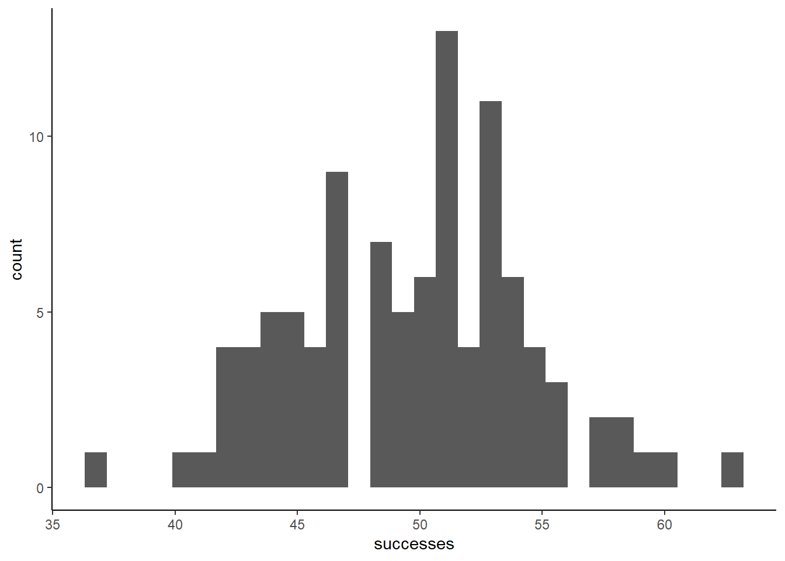
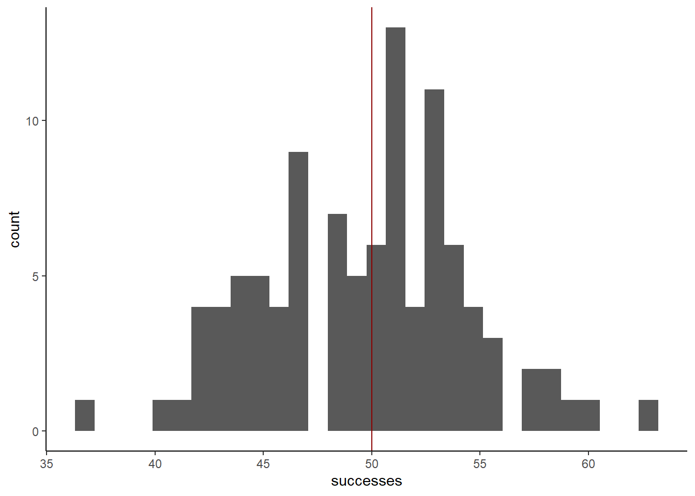
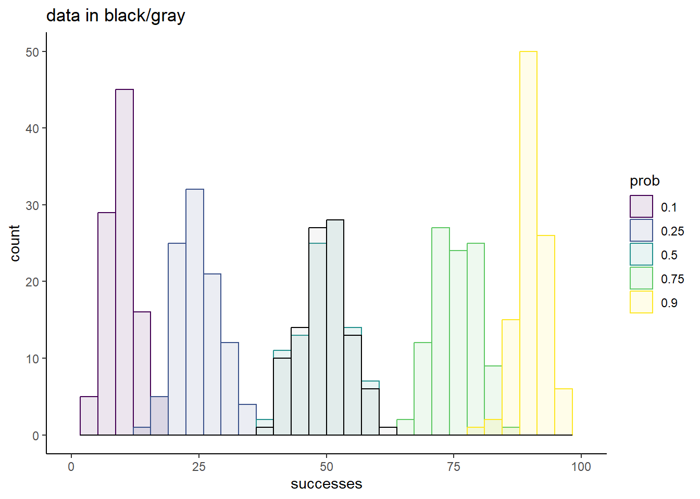
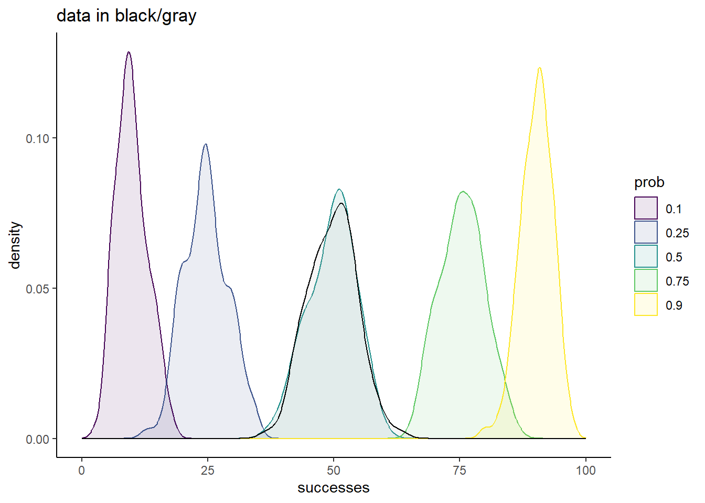
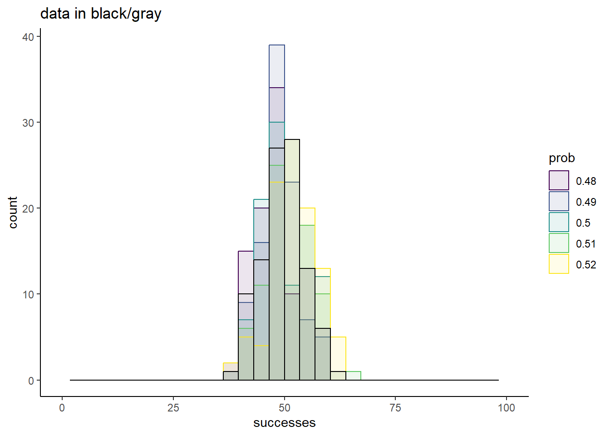
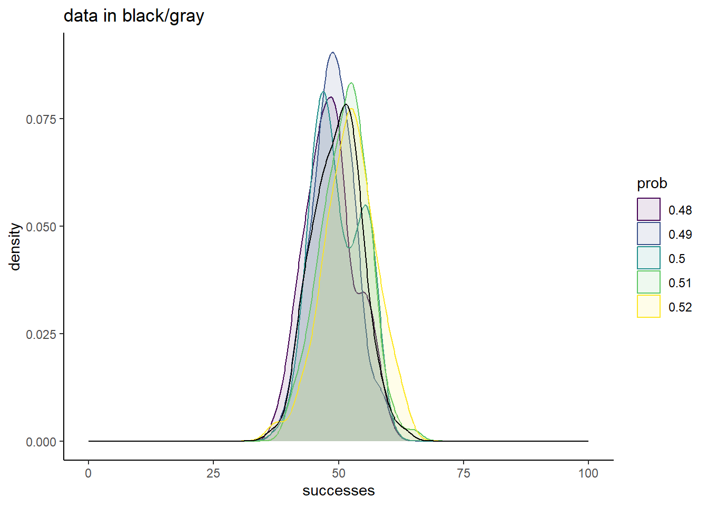
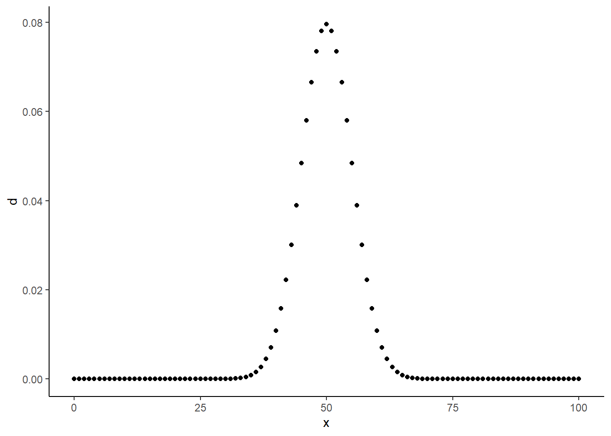

# Set the seed so you can reproduce my results
set.seed(42)
simdata <- rbinom(100, 100, 0.5)4 Introduction to Statistical Modeling
The challenge we are faced with when analyzing RNA-seq data, or any data for that matter, is to draw conclusions in a way that accounts for the randomness inherit in our data. In the last chapter, we introduced a number of tools, i.e., probability distributions, for describing the common types of randomness. Once we have a sense of how to describe the variance in our data, the set of probability distributions that represent good “models” of our data, how do we put these models to use? The answer to this question is known as “fitting the model to your data”, and is the topic of this chapter.
4.1 Developing an intuition for model fitting
This exercise will walk you through how to think about what it means to “fit” a model. The key tool in our arsenal is going to be simulation, where we create data that follows known distributions. Your task, if you are willing to accep it, is to figure out how to recover the parameters you used in your simulation from the noisy data generated by the simulator. Are you ready? I’ll start with a guided exercise, and then present some open-ended exercises to get you exploring model fitting.
4.1.1 Guided exercise
Step 1: Simulate some data
For this exercise, I am going to simulate binomially distributed data, and devise a strategy to figure out what prob I used in this simulation. Obviously, I will know what prob I used, but in the real world, you won’t have access to the true parameters of the universe. Knowing the truth helps us know if we are on the right track though, and is why simulations are such a useful tool:
Technically, there are two parameters that I had to set here, size and prob. In this case, I am going to assume that size is data I have access to. Usually, if we are modeling something as binomially distributed, we will know how many trials there were.
Step 2: Visualize your data
Let’s see what the data looks like:
library(ggplot2)
library(dplyr)Warning: package 'dplyr' was built under R version 4.3.2
Attaching package: 'dplyr'The following objects are masked from 'package:stats':
filter, lagThe following objects are masked from 'package:base':
intersect, setdiff, setequal, unionsim_df <- tibble(successes = simdata)
sim_plot <- sim_df %>%
ggplot(aes(x = successes)) +
geom_histogram() +
theme_classic()
sim_plot`stat_bin()` using `bins = 30`. Pick better value with `binwidth`.
Does the data look at all surprising? We set prob equal to 0.5, so on average, we expect 50% of the trials to end in successes. If we perfectly hit this mark in our finite sample, that would mean 50 successes. Let’s annotate this mark on the plot
sim_plot +
geom_vline(xintercept = 50,
color = 'darkred')`stat_bin()` using `bins = 30`. Pick better value with `binwidth`.
It’s a bit noisy, but the data does seem to be roughly centered around 50. That’s a good sign that our simulation worked, but now we need to think about how we would have figured out that the prob in this case was 0.5
Step 3: Fight simulations with simulations
Our goal is to find a binomial distribution prob parameter that accurately describes this data. An intuitive way to think about doing this is to simulate data with candidate values for prob, and see how similar the simulated data is to the real data. Here’s how you might do that:
### With a for loop
library(tidyr)
candidates <- c(0.1, 0.25, 0.5, 0.75, 0.9)
sim_list <- vector(mode = "list",
length = length(candidates))
for(c in seq_along(candidates)){
sim_list[[c]] <- rbinom(100, 100, candidates[c])
}
names(sim_list) <- as.factor(candidates)
sim_df <- as_tibble(sim_list) %>%
pivot_longer(names_to = "prob",
values_to = "successes",
cols = everything())
sim_df %>%
ggplot(aes(x = successes,
fill = prob,
color = prob)) +
geom_histogram(alpha = 0.1,
position = 'identity') +
geom_histogram(data = tibble(successes = simdata,
prob = factor('data')),
aes(x = successes),
color = 'black',
alpha = 0.1,
fill = 'darkgray') +
scale_fill_viridis_d() +
scale_color_viridis_d() +
theme_classic() +
ggtitle('data in black/gray') +
xlim(c(0, 100))`stat_bin()` using `bins = 30`. Pick better value with `binwidth`.
`stat_bin()` using `bins = 30`. Pick better value with `binwidth`.Warning: Removed 10 rows containing missing values (`geom_bar()`).Warning: Removed 2 rows containing missing values (`geom_bar()`).
sim_df %>%
ggplot(aes(x = successes,
fill = prob,
color = prob)) +
geom_density(alpha = 0.1,
position = 'identity') +
geom_density(data = tibble(successes = simdata,
prob = factor('data')),
aes(x = successes),
color = 'black',
alpha = 0.1,
fill = 'darkgray') +
scale_fill_viridis_d() +
scale_color_viridis_d() +
theme_classic() +
ggtitle('data in black/gray') +
xlim(c(0, 100))
Of these small subset of candidate prob values, 0.5 is the clear winner. The overlap of the simulation with the data is striking, and strongly suggests that this is a good fit to our data.
Of course, we know the true value is 0.5, and this knowledge guided our choice of candidates. So let’s explore a different range of candidates, all of which are much closer to the known truth:
### With a for loop
library(tidyr)
candidates <- c(0.48, 0.49, 0.5, 0.51, 0.52)
sim_list <- vector(mode = "list",
length = length(candidates))
for(c in seq_along(candidates)){
sim_list[[c]] <- rbinom(100, 100, candidates[c])
}
names(sim_list) <- as.factor(candidates)
sim_df <- as_tibble(sim_list) %>%
pivot_longer(names_to = "prob",
values_to = "successes",
cols = everything())
sim_df %>%
ggplot(aes(x = successes,
fill = prob,
color = prob)) +
geom_histogram(alpha = 0.1,
position = 'identity') +
geom_histogram(data = tibble(successes = simdata,
prob = factor('data')),
aes(x = successes),
color = 'black',
alpha = 0.1,
fill = 'darkgray') +
scale_fill_viridis_d() +
scale_color_viridis_d() +
theme_classic() +
ggtitle('data in black/gray') +
xlim(c(0, 100))`stat_bin()` using `bins = 30`. Pick better value with `binwidth`.
`stat_bin()` using `bins = 30`. Pick better value with `binwidth`.Warning: Removed 10 rows containing missing values (`geom_bar()`).Warning: Removed 2 rows containing missing values (`geom_bar()`).
sim_df %>%
ggplot(aes(x = successes,
fill = prob,
color = prob)) +
geom_density(alpha = 0.1,
position = 'identity') +
geom_density(data = tibble(successes = simdata,
prob = factor('data')),
aes(x = successes),
color = 'black',
alpha = 0.1,
fill = 'darkgray') +
scale_fill_viridis_d() +
scale_color_viridis_d() +
theme_classic() +
ggtitle('data in black/gray') +
xlim(c(0, 100))
Now the comparisons are much messier. Sure, 0.5 is a great match, but none of these chosen values yield simulations too different from the truth.
From this, it is clear that there are ranges of values that we can confidently rule at as good conclusions for what prob best describes our data. Values of 0.25 or less, and values of 0.75 or more are very bad fits. There is also good evidence that a good fit is somewhere around 0.5, but the exact value that would represent the best guess is uncertain.
Step 4: Make fitting more rigorous
The current strategy we have employed could be referred to as “simulations and vibes”. We have simulated data with some values for the unknown parameter in question, and assessed by eye how cloes our simulated data matched our real data. Whlie this has offered some valuable insights, it’s important to recognize the fundamental limitations of such an approach:
- Each simulation with a given parameter value will yield different results. Random number generators are going to be random. One output of
prob = 0.5might look exactly like the real think, but so might one value ofprob = 0.48. - It’s time intensive. You have to simulate data for a bunch of different values, and then painstakingly stare at cluttered plots trying to make sense of which simulation fit your data the best.
- It’s subjective. None of our simulations matched the data exactly, and even if one run of a particular simulation did, see point 1 for why that can’t be considered conclusive evidence in favor of that parameter being the best.
How can we fix this problem? What we need is a quantitative metric, a number that we can assign to every possible value of prob that describes how good of a fit it is to our data. It should have the following properties:
- It should be deterministic; a given value of
probshould yield a single unique value for this metric. - Higher values should represent better fits.
- The more data we have, the better this metric should do at predicting the true parameter value.
Sit and think about this for a while (maybe a couple decades, which is what it took the field to converge on this solution), and you’ll arrive at something called the “total likelihood”. In this part of the exercise, we’ll develop an intuition for this concept:
4.1.1.1 What is the likelihood?
When discussing a particular distribution, we have playing with its associated random number generator function in R. For the binomial distribution, this is the rbinom() function. If you check the documentation for rbinom() though, with ?rbinom, you’ll see that you actually get documentation for 4 different functions, all with a similar naming convention! We’ll find use for all of these at some point in this class, but for now, let’s focus on one that we briefly visited last week, dbinom().
Unlike rbinom(), dbinom() returns the same value for a given set of parameters every single time. It is not random:
dbinom(50, 100, 0.5)
dbinom(50, 100, 0.5)[1] 0.07958924
[1] 0.07958924What does this value represent though. First, let’s understand its input:
x: The number of “successes”. So essentially what you could get out from a given run ofrbinom().size: Same as inrbinom(), the number of trials.prob: Same as inrbinom(), the probability that each trial is a success.
So it seems to quantify something about a particular possible outcome of rbinom(). It assigns some number to an outcome given the parameters you could have used to simulate such an outcome. What does this number represent though? To find out, let’s plot it for a range of x’s:
xs <- 0:100
ds <- dbinom(xs, 100, 0.5)
tibble(x = xs,
d = ds) %>%
ggplot(aes(x = x, y = d)) +
geom_point() +
theme_classic()
Values closer to 50 get higher numbers than values further from 50, and the plot seems to be symmetric around 50. What’s significant about 50? It’s \[size * prob\], or the average value we would expect to get from rbinom() with these parameters!
This investigation should give you some sense that the output of dbinom() is in some way related to the probability of seeing x given a certain size and prob. Is it exactly this probability? We can gut check by assessing some cases we know for certain. Like, what is the probability of seeing 1 success in 1 trial if prob = 0.5? 0.5, because that’s the defintiion of prob! What does dbinom() give us in this scenario:
dbinom(1, 1, 0.5)[1] 0.50.5; that’s a good sign that we are on to something. Try out some different values of prob:
dbinom(1, 1, 0.3)[1] 0.3dbinom(1, 1, 0.7)[1] 0.7dbinom(1, 1, 0.2315)[1] 0.2315Everything still checks out. How about the probability of 2 successes in 2 trials given a certain prob? Each trial has probability of prob of being a success, and each trial is independent. Therefore, the probability of 2 successes in 2 trials is \[prob * prob\]. Does dbinom() give us the same output in that case?
# Expecting 0.25
dbinom(2, 2, 0.5)[1] 0.25# Expecting 0.01
dbinom(2, 2, 0.1)[1] 0.01Sure thing!
Conclusion: dbinom(x, size, prob), tells us the probability of seeing x successes in size trials given the probability of a success is prob.